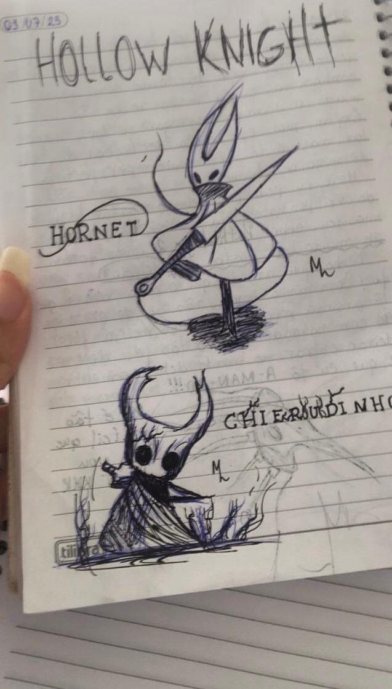
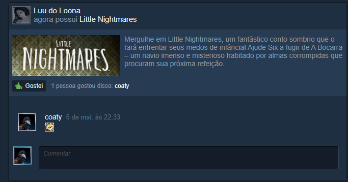
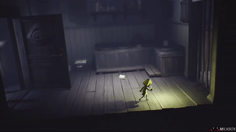

Durante esse ano de namoro minha pitica se tornou uma gamer exemplar, vindo a desenvolver seu proprio gosto e terminar seus primeiros joguinhos

Hollow Knight
Tudo começou aqui o tal do "rola noturna" foi o primeiro jogo no qual ela teve vontade de jogar por conta propria, ela passou por bons desafios como o Falso Cavaleiro, a Hornet e o temivel pular e bater para baixo. Lembro ate hoje de voltar do trabalho e ver ela viciada tentando derrotar a Hornet ate conseguir, fiquei bastante orgulhoso. Atualmente esse jogo encontrasse em hiato, mas com fé nossa guerreira vai voltar e zerar essa maravilha.
{kind=link}
Alice Madness Return
O primeiro jogo que meu amor realmente zerou, eu lembro ate hoje a sensação de ver ela tão empolgada com uma midia que eu tanto amo, Alice tambem foi marcante para mim pois foi um jogo que eu não influenciei na decisão dela, justamente por isso resolvi dar a faquinha do jogo para minha pequena no nosso primeiro aniversario de namoro.
Apesar de tudo Lulu zerou esse jogo com uma sensação broxa por estar tudo em ingles e ela não ter entendido muito da historia, ela tem planos de ré-jogar ele no PC com mod de tradução e tambem pretende fazer o cosplay da Alice.
{kind=link}
A Hat in Time
Depois que eu comprei meu switch eu fui pegando alguns jogos conforme as promoções, um deles foi A hat in time (Eu Chapéu no Tempo) um jogo que tenho na minha lista de desejo a anos para jogar. Comecei a jogar assim que peguei, porem alguns dias depois Lulu resolveu se apossar do jogo para ela, me passando e zerando muito antes de eu se quer fazer 50% do jogo, outro jogo que fiquei muito feliz pois um dos motivos pelo qual peguei o switch foi para que ficasse acessivel dela jogar quando ela quisesse.
Sendo assim, esse foi o segundo joguinho que meu amor zerou, fez ate 100% pegando todos os coletaveis e aqui entre nós, eu acho que ela gostou bem mais que alice.
{kind=link}
Proximas aventuras
Atualmente Lu quer zerar Little Nightmares (Pesadelinho) dei de presente para ela ter na propria conta da steam e espero muito que ela goste :D

Tambem temos que continuar jogando Minecraft Dungeons juntinhos ate zerar dessa vez, assim que der espero começarmos logo.
Atualização 13/05/2023
Pois é lulu acaba de zerar pesadelinho, nem ela nem eu sabiamos que o jogo era tão curto e depois de 4,7 horas ela finalizou na sua propria conta da steam, PARABENS MOMOOOOO 